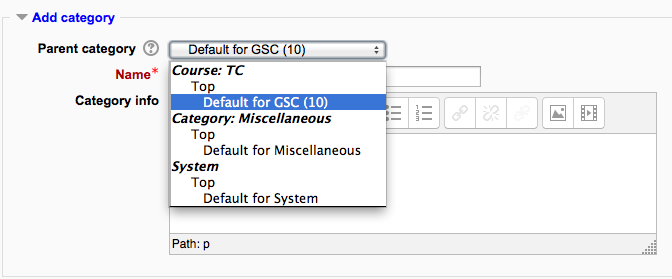

A question category can contain individual questions or other question categories. They can be found by using the Question bank or when building a quiz.
You can imagine a question category as a folder on your desktop computer. Then, questions are stored in these categories in a similar way as your files are stored in a file system.
Each category must have a name and you can include a short description of the category. You can create a category hierarchy. For example, you can specify a parent category for each category or the ‘Top’ as the parent, when a category has no parent.
Tip: Creating question categories and sub categories is a good practice. It is better than keeping all your questions in one big list in the quiz module. The hierarchy feature enables you to separate categories into sub categories and sub categories into sub sub categories etc. indefinitely. Categories and sub categories, etc., are very powerful when combined with random questions that can select either from one category or from a category or any of its sub categories.
You can share questions in several different contexts. Sharing categories in the ‘System’ contex or ‘Course’ context has a similar effect to publishing the category so others can see them or hiding a question category from specific users.
By default a course teacher cannot see or use any Question context above the course level.
Note: “Core System” and “System” refer to the same thing when we are describing or showing screen shots of question categories. “System” is the current term you will see in 2.x releases of Moodle.

Open the question bank. Either :
- Click on the Questions link in the ‘Administration’ block click on the ‘Questions’ link.
- Or open the Editing a quiz page - when logged in as a teacher or someone with appropriate permissions open a quiz and then click on the ‘Edit’ tab.
Click on the ‘Categories’ tab.
Below the list of current categories you will see a form to add a new category.
Choose the ‘parent’ category in which your new category will be placed. See image of ‘Parent’ selector image to right.
- Placing your category in another category makes it a sub-category of the parent.
- Choosing ‘Top’ means that your category is a top level category, not a sub category. When more than one sharing context is available you can place your category as a top level category in any of the contexts.
- Notice you can choose to make your category a ‘top level’ category in any context (see Question contexts) that is available to you. Or you can choose to add your category as a sub category of another category in the same context as the
Type the name of your new question category in the text box.
Add an optional meaningful description in the category info area.
Click the ‘Add Category’ button. Your new question category will appear in the list of current categories.
Categories can also be created or deleted at will. However, if you try to delete a category containing questions, then you will be asked to specify another category to move them to. You cannot delete or move the last category in any context, there must always be one category in a context.
You can also arrange the categories in a hierarchy so that they are easier to manage.
- The up/down arrow icons lets you change the order in which category ‘peers’ are displayed.
- The up / down icons are also used to move a top-level category between contexts. If you move a category to be the first or last category in a context and then press the arrow key again then it will be moved to the next context.
- The right arrow icon allows you to move a category to be a child category of the category listed immediately above it.
- The left arrow icon allows you to move a category up one category level (to be a peer of it’s parent category).
See the tool tip that appears when you place the mouse pointer above these icons if you’re not sure what action an icon will perform. You cannot move the last category in any context, there must always be at least one category left in all contexts.